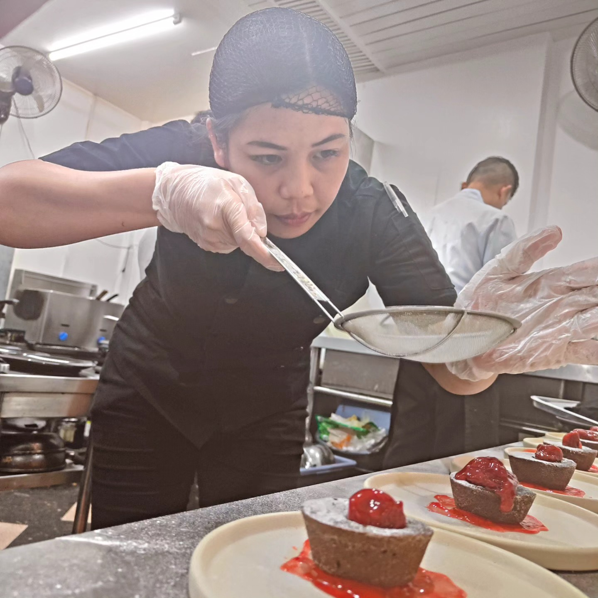
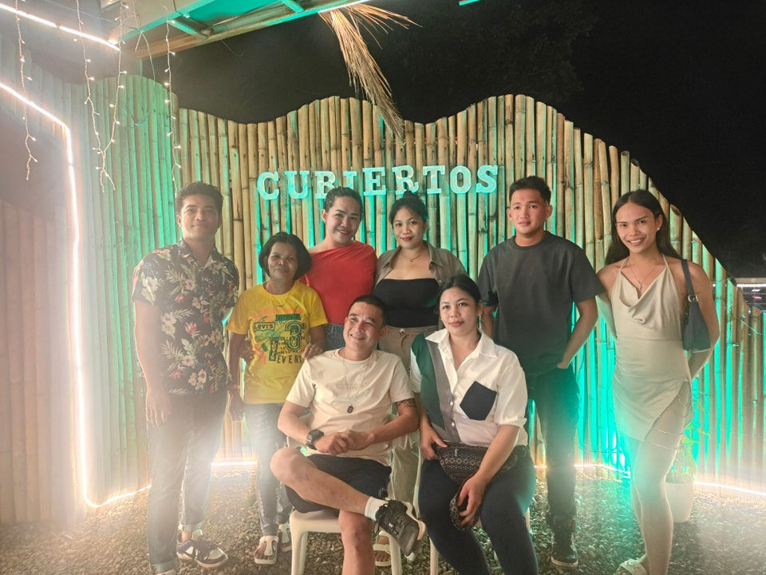
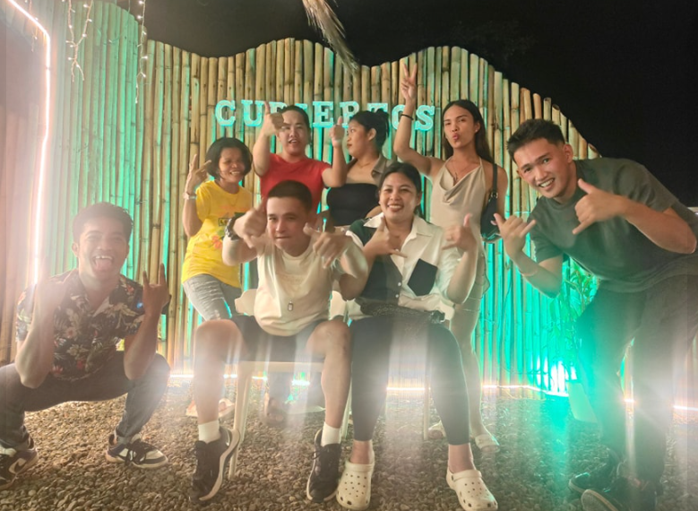
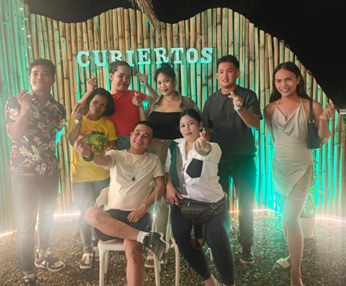

ABOUT US
Cubiertos Food Hub is a culinary agency for the senses. Our passion goes beyond the plate—it's about creating an atmosphere where every detail is curated for connection.
We bridge the gap between tradition and innovation, collaborating with visionaries to redefine the local dining landscape.
Our work does make sense only if it is a faithful witness of his time.— Jean-Philippe Nuel, Director




Our Story
Cubiertos began with a small, late-night meal cooked by a young dreamer for her siblings. That moment sparked a passion that turned into a dream. Starting with two staff and three tables, we worked through storms, shortages, and sleepless nights — always holding onto our purpose: to serve food with soul.
Today, Cubiertos has grown into a cozy local hub where people come not just to eat, but to feel at home. From humble beginnings to heartfelt meals — this is our story, and it’s still being written with every dish we serve.